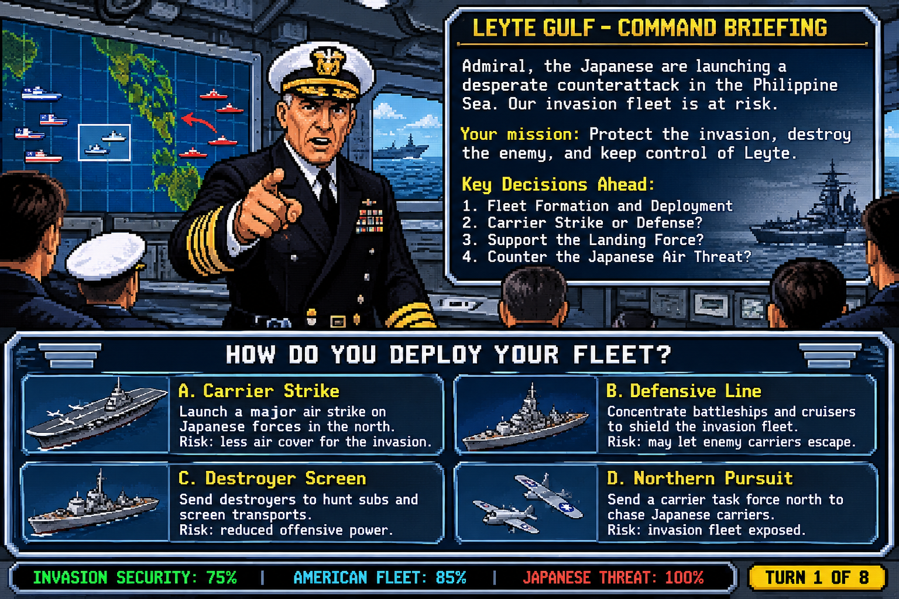
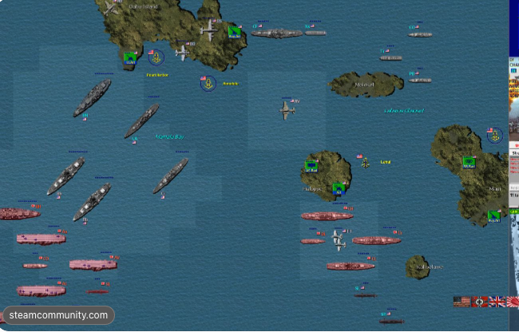

COMMANDER, REPORT TO THE WAR ROOM
October 23, 1944. American forces are landing on Leyte in the Philippines. Japan has committed its remaining major naval forces to a desperate plan to disrupt the invasion.
“The landing force must be protected. The enemy may come from more than one direction. You will have incomplete information, competing priorities, and no perfect choice.”
In this simulation, you advise the American command. Admiral Chester W. Nimitz oversees the Pacific Fleet, while Admirals William Halsey and Thomas Kinkaid command major forces in the battle area.
Your mission: protect the invasion, manage the carrier and battleship forces, and respond to the Japanese plan before the enemy can destroy the landing force.
Historical note: The battle was fought across four connected engagements from October 23–26, 1944. The game simplifies command decisions so you can explore the strategic dilemmas.
